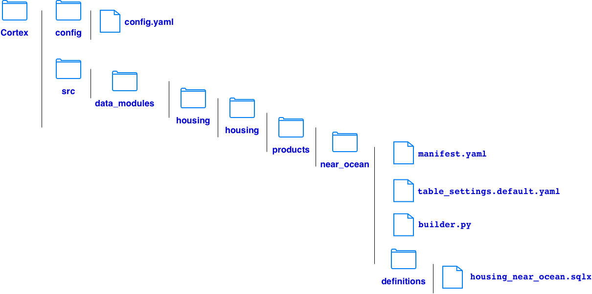
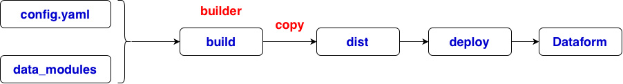

# download Cortex from https://github.com/GoogleCloudPlatform/cortex-framework
git clone https://github.com/GoogleCloudPlatform/cortex-framework.git
# config.yaml
# 1. Project used to build Cortex modules
buildEnvironment:
buildProjectId: data-508912
# 2. Data sources, targets and modules
data:
bigQueryLocation: US
# Where Cortex finds the module code
namespaces:
- name: housing
path: ../src/data_modules/housing
# BigQuery datasets
datasets:
- id: housing_source
projectId: data-508912
datasetId: test
- id: housing_target
projectId: data-508912
datasetId: test
# Modules to deploy
modules:
foundations: [] # modules of cleaning missing values, normalize column names
catalogs: [] # modules of integrating dataset metadata with a catalog
products: # modules of filtering housing records, calculate averages, aggregate data
- moduleId: housing_near_ocean
modulePath: housing.housing.products.near_ocean
dataTargetId: housing_target
enabled: true
# 3. Destination for generated Dataform code
deployment:
targets:
- type: dataform
enabled: true
targetSettings:
repositoryProjectId: data-508912
repositoryRegion: us-central1
repositoryName: cortex-housing
workspaceName: dev
# manifest.yaml
# what the module is and how Cortex identifies it
displayName: Housing Near Ocean
description: >
Creates an analytical BigQuery table containing
California housing records near the ocean.
category: consumption_product
type: near_ocean
# table_settings.default.yaml
# how the module's output tables are configured
common:
housing_near_ocean:
materializationType: table
dataformTags:
- housing
- near_ocean
# builder.py
# how to produce the Dataform code
# Copy existing SQLX files
# Generate new SQLX
# Modify SQLX
# Generate JavaScript
# Apply table settings
# Validate inputs
import logging
import shutil
from pathlib import Path
from common.builders.base import ProductBuilder
logger = logging.getLogger(__name__)
class HousingProductBuilder(ProductBuilder):
"""
Cortex builder for the housing data product.
Method A: Copy existing SQLX definitions into
the generated Dataform output directory.
"""
def build(self, **kwargs) -> None:
module_id = kwargs.get("module_id", "housing_near_ocean")
output_dir = kwargs.get("output_dir")
if output_dir is None:
raise ValueError("Cortex did not provide output_dir")
output_dir = Path(output_dir)
# Directory containing this builder.py
module_dir = Path(__file__).resolve().parent
# Directory containing manually written SQLX
definitions_dir = module_dir / "definitions"
if not definitions_dir.is_dir():
raise FileNotFoundError(
f"Definitions directory missing: {definitions_dir}"
)
output_dir.mkdir(parents=True, exist_ok=True)
# Copy SQLX/JS files and retain their relative paths
files = [
path
for path in definitions_dir.rglob("*")
if path.is_file() and path.suffix in (".sqlx", ".js")
]
if not files:
raise ValueError(
f"No SQLX or JS definitions found in {definitions_dir}"
)
for source in files:
relative_path = source.relative_to(definitions_dir)
destination = output_dir / relative_path
destination.parent.mkdir(
parents=True, exist_ok=True
)
shutil.copy2(source, destination)
logger.info(
"Module %s: copied %s to %s",
module_id,
source,
destination,
)
logger.info(
"Module %s: packaged %d Dataform files",
module_id,
len(files),
)
# housing_near_ocean.sqlx
config {
type: "table",
database: "data-508912",
schema: "test",
name: "housing_near_ocean",
tags: ["housing", "near_ocean"]
}
SELECT *
FROM `data-508912.test.housing`
WHERE ocean_proximity = 'NEAR OCEAN'

# GCP login
gcloud auth login
gcloud auth application-default login
gcloud config set project data-508912
# enable apis
gcloud services enable bigquery.googleapis.com dataform.googleapis.com --project=data-508912
# build in root of project
uv run cortex-build --config config/config.yaml
# deploy to Dataform
uv run cortex-deploy --config config/config.yaml
# execution on Dataform
# when no uv installed
# create a virtual environment
python3 -m venv .venv
source .venv/bin/activate
# install dependencies
python -m pip install --upgrade pip
python -m pip install -e .
# build
cortex-build --config config/config.yaml
# deploy
cortex-deploy --config config/config.yaml